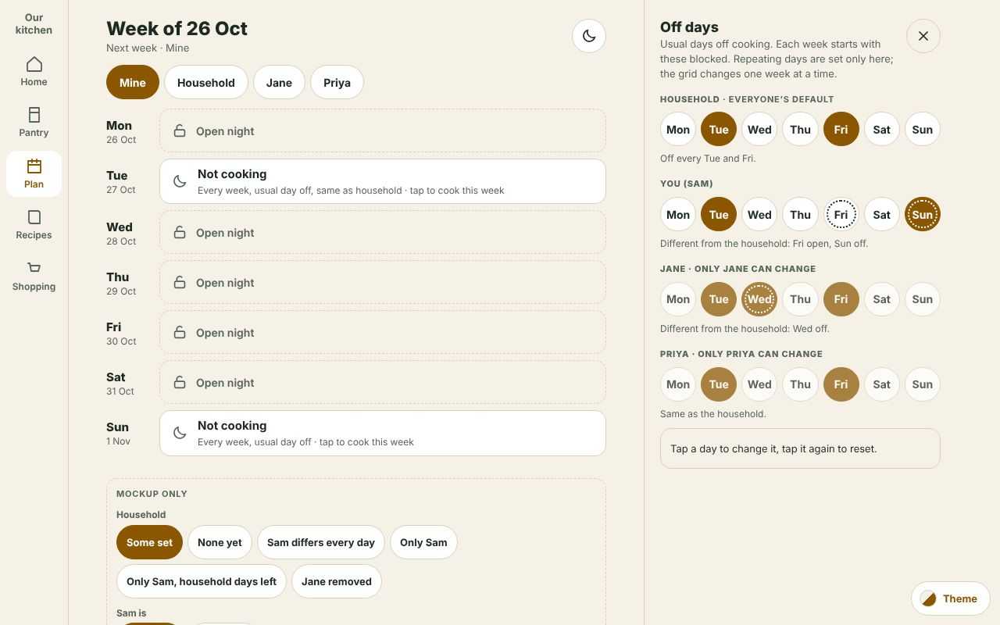
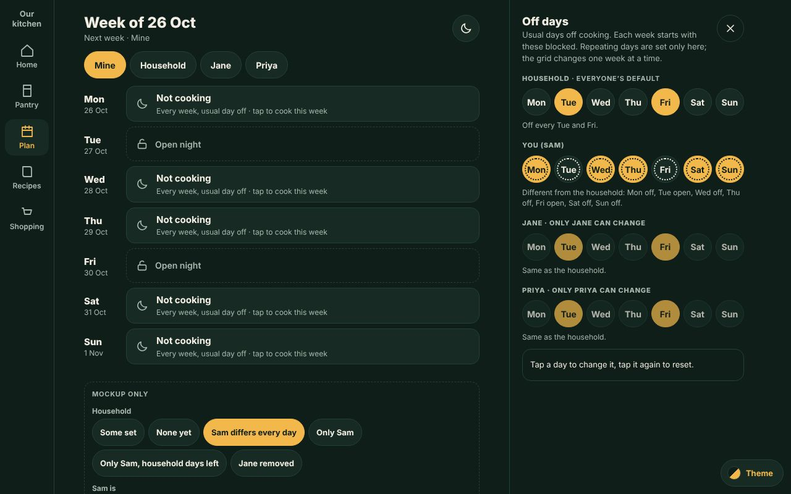
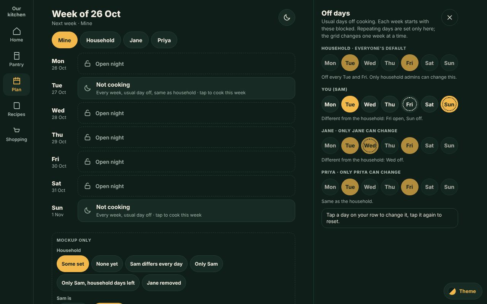
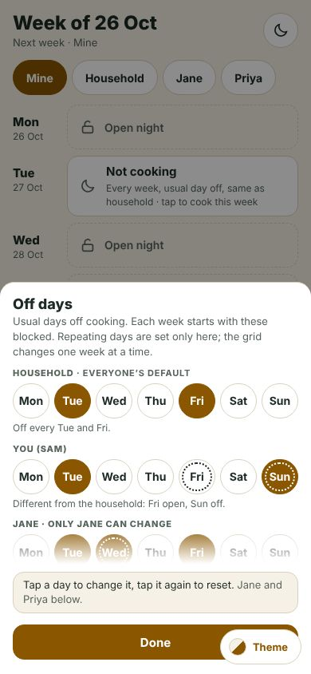
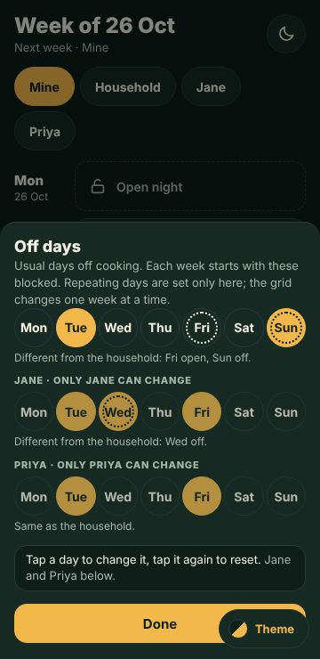
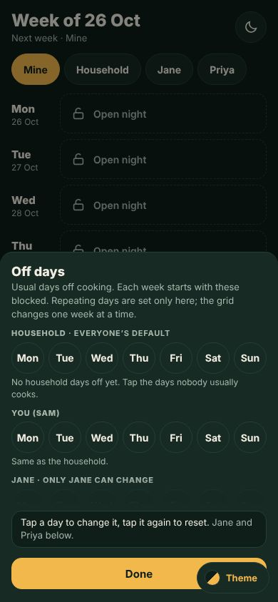
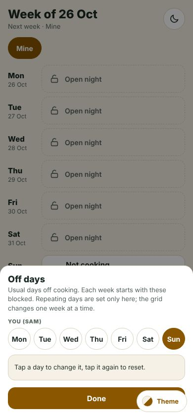

Kitchie issue #860. Mockup only, nothing is saved or built. The Off days flyout (the moon in the Plan header, until now the Meal planning flyout opened from a cog) gets a Household row of usual days off that applies to everyone by default; each person keeps their own setting and the person wins, whichever way they disagree. The Categories and Leftovers rename section is gone from it. Redesigned after the owner's review (17 Oct 2026): no legend; a day that matches the household is plain and says "Same as household"; only a day that differs is marked, with a dotted ring; tapping a marked day again resets it; on a phone the list is a fixed height showing the household and you, the others scroll in place; you change only your own row. It covers the phone (bottom sheet), the desktop (right-hand lane flyout) and the centred-window alternative.
The owner asked for no sign-off rounds on this mockup: every call is a numbered decision or a Proposal with an open question and a recommended answer. Full spec: docs/knowledge/plan-usual-days.md. Check: tools/plan-usual-days-check.mjs.
Each page opens with the flyout open; press the moon (or S on desktop) to open it again. Below the week, Mockup only switches the sample household and whether Sam is an admin. Tap a day on You (Sam) to flip it; tap a dotted day to put it back to the household's. Hover a day (or press and hold on a phone) for what it is. Tap a household day (as an admin) to change it for everyone; Sam's own days that then match it are dropped. Jane and Priya are read only. Tap a Not cooking night in the week to cook it this week only (unchanged).
What it looks like

Desktop, light: the right-hand flyout. Household, then You (Fri a dotted open, Sun dotted off), then Jane (Wed dotted off) and Priya (plain); no legend.

Desktop, dark: Sam differs on every day, so every day on his row has the dotted ring. Tap one to put it back.

A member who is not an admin: the household row is read only, with the owner's line. Other people's rows are read only for everyone.

Phone 390, light: the list is a fixed height showing Household and You; a peek of Jane under the fade.

Phone 360, dark: scrolled in place to Jane and Priya; the sheet did not move.

Nothing set yet.

One member: today's flyout.
How to read a person's day (there is no legend on the screen)
The household
The person
Look
Hover, long-press, focus
open
open
Plain, unfilled
Same as household
off
off
Plain, filled
Same as household
off
open
Dotted open (unfilled, dotted ring)
Different from the household (open). Click again to reset
open
off
Dotted ring on the solid fill
Different from the household (off). Click again to reset
The order of precedence: a one-week change for the date, then the person's own setting for the weekday (stored only where it differs from the household), then the household's. Fill is the value (filled = off, unfilled = open); only a difference is marked. Today's personal days are exactly "own off"; nothing existing changes meaning.
Decisions
UD-D1. The order of precedence is one-week change, then the person's own weekday setting, then the household's. The person wins in both directions (owner, #860). The one-week override still beats everything, exactly as the code does today.
UD-D2. A day is open or off, and a person's day is either the same as the household's or different from it. A person has three possible stored states per weekday: nothing (same as the household), own off, own open; but a stored value exists only where it differs from the household (UD-D18), so "own off" is only ever on a household-open day and "own open" only on a household-off day. Today's personal list stays "own off", and a household with no household days behaves exactly as today (every own off differs from an all-open household).
UD-D3. Only household admins change the household row (owner's standing rule P2, D25 to D28: household things are admin-only; read-only for everyone else with one line, never hidden). The line is the owner's own: "Only household admins can change this." The existing rule for personal rows stays: only that person can change it ("only Jane can change"). Another person's row is visible and read-only, and shows same versus different in the same way (UD-D19).
UD-D4. The household row is called "Household" (the owner's word in Plan UI review 201: "Household", not "Everyone") and comes first, above You.
UD-D5. The Categories section and its Leftovers rename row are gone from this flyout, on phone and desktop (one sheet). Nothing is removed from the server: GET/PATCH /api/plan/categories and the rename stay. Where it is reached from now is UD-P9.
UD-D6. The household never writes a person's own setting. Changing a household day changes what everyone whose day matches it gets; nobody's own choice is edited (owner's standing P1, subject control, and P6, forward-looking changes).
UD-D7. Edits save as you tap, as today. No Save button. The phone sheet keeps Done, the desktop flyout the X.
UD-D8. A personal "open" on a household-off weekday is a permanent personal choice and reads in the week as a plain open night. The tip "Usual day off, cooking this week" stays for what it means today: a usual day lifted for one week only.
UD-D9. One markup, one script, the same class names for phone and desktop; only the container differs (.ud-* classes; usual.css shared, lane.css desktop only, sheet.css phone only). DESIGN.md section 7 and the owner's standing rule of 10 October (viewport-specific code in its own file).
UD-D10. A removed member has no row. Their settings never touch anyone else's; restoring them inside the week brings their own settings back (RM-D1); they are erased with them after the week.
UD-D11. Keyboard. S opens the flyout (the Plan's existing key; its help-list line becomes "Off days"), left and right arrows move along a row, Enter or Space flips your own day (and flips it back to reset it), Escape closes the flyout.
UD-D12. The Plan header gets no badge (only the trigger itself changes, UD-D15). Whether a night is blocked by the household or by the person is shown on the night's tile, not in the header (UD-P7).
UD-D13. The flyout is titled "Off days" (owner, 17 Oct 2026, replacing "Meal planning"). The exact text is Off days, on phone and desktop, in the dialog variant (desktop.html?c=dialog), the page title bar ("Off days on a phone", "Off days on desktop"), the page headings, and the dialog's accessible name (aria-labelledby the heading). Entry points that open it use the same name: the trigger's accessible name and tooltip are "Off days" and "Off days (S)", and the keyboard help line is "Off days". The sentence under the title keeps today's copy ("Usual days off cooking. ..."). Where the old title survives: the older fragments/plan-desktop and fragments/plan-week-ai settings sheets and the Plan UI review headers now say "Off days" too (see Build impact for the real code).
UD-D14. One vocabulary: open, off, same as household, different from the household. A day is open (unfilled) or off (filled). Against the household it is the same or different, in the owner's words; never a third value and no "inherited", "follows" or "pinned". Used in tooltips, accessible names, hints, status lines, the week tile ("Every week, usual day off, same as household") and this document. There is no legend (UD-D16).
UD-D15. The trigger is a moon, not the settings cog (owner, 17 Oct 2026), on phone and desktop, in the Plan header. It is the repo's existing moon (ic.moon, the Plan UI review icon set: 24 grid, 2px round stroke, path M20 14A8 8 0 0 1 10 4a8 8 0 1 0 10 10z), so no new glyph. Its accessible name is "Off days", its tooltip "Off days (S)". Dark and light both use currentColor.
UD-D16. No legend, key or bulk reset anywhere (owner, 17 Oct 2026: "We don't need the legend"), on phone, desktop and the dialog. The base look is unchanged (open unfilled, off filled); the hover and the accessible name say the rest.
UD-D17. A day equal to the household's is plain and says "Same as household"; a day that differs carries a dotted ring (owner: "anything I'm changing from the household is what I mark"). Household off and I open it: dotted open. Household open and I close it: dotted ring with the solid fill. The same for every other person. The dotted ring replaces the dashed "inherited" ring and the corner dot of the first draft. The household row has no ring.
UD-D18. An override is stored only when it differs from the household, and tapping a marked day again resets it (owner: "clicking on that again just resets it to the household. Simple"). This reverses UD-P5: a personal value equal to the household's is no longer kept as pinned; it is the plain state and nothing is stored. The tap is the reset, so there is no Inherit all, no three-choice picker and no "Inherited from the household" choice; Undo stays for any change. When the household changes a day, an own setting that now equals it is dropped in the same step (every override differs from the old household value, so a household flip always makes the matching overrides equal): nobody's result changes by it, the status line says who ("Fridays are open for the household. Now the same as household: you."), and Undo puts it back (UD-P5 below).
UD-D19. You change only your own row; the household row is for admins; other people's rows are read only (owner: "I can only fiddle with what I am part of, or my household"). A read-only chip is drawn as such (quieter, not clickable, aria-disabled), still focusable so its tip can be read; a tap says why ("Only Jane can change this", "Only household admins can change the household days."). An admin has no more power over a person's row than a member has.
UD-D20. On a phone the list is a fixed height showing Household and You; the other people scroll in place (owner: "fix the height of this thing to household and me ... they are not as important"). Same behaviour on every phone width (360 to 430): the box does not grow with the number of people, a peek and fade at the foot and "Jane and Priya below." show there is more, and scrolling moves only the list, never the sheet. With two rows (one member and household days, or the household and one member) there is nothing to scroll and the list is its natural height; a household of one with no household days has no household row (UD-P10).
Proposals Owner silent
Each one is a judgment call with the open question, the recommended answer and what a wrong guess costs.
UD-P1. On desktop Off days is a right-hand lane flyout (the Home Plan it flyout's shape), not the bottom sheet or a centred window. Q: do you want that shape? Recommend yes: you asked to reuse the flyout layout. A wrong guess costs a container swap only, the content is identical; desktop.html?c=dialog draws the same content as the centred window the Plan desktop mockup has today. The phone and tablet keep the sheet.
UD-P2. (Replaced by UD-D18.) The three-choice picker is gone: a tap flips your own day, and a tap on a marked day resets it. A household of one with no household days is the same plain on and off, as today.
UD-P3. A dotted ring on a differing day, nothing on a matching one, no legend. Q: is the dotted ring readable at a glance on a 44px-high chip, on both the filled and the open one? Recommend as drawn: it is the owner's own picture (dotted open, dotted with the solid fill), the fill never changes meaning, and the ring is a shape so it does not rely on colour. A wrong guess costs a restyle of one CSS rule (tokens only).
UD-P4. A household chip changes at once, with no confirm; a status line says what changed and whose own setting it made the same ("Fridays are open for the household. Now the same as household: you."). Q: should changing the household's day ask first, since it changes everyone's default? Recommend no confirm: it is one tap to put back (Undo, or tap again), and nobody's result changes by the pruning in UD-D18.
UD-P5. An own setting that a household change makes equal to the household's is dropped, not kept. Q: or kept so it holds if the household changes back? Recommend drop (it follows from UD-D18, the owner's "stored only when it differs", and from what the plain look promises: a plain day moves with the household). A wrong guess costs a deliberate "I always open Fridays" that is lost when the admin later closes Friday again; Undo puts it back straight after, and the person's dotted day is one tap to set again. The old UD-P5 (keep as pinned) is reversed.
UD-P6. There is no bulk reset. Q: add a quiet text link "Reset all to the household" for a person who differs on many days? Recommend no (the owner asked for simple; one tap per day resets it, and the status line has Undo). Only the "everyday" sample differs on all seven days, and seven taps is the worst case. A wrong guess costs one secondary link and one handler.
UD-P7. A week tile that is off because it matches the household reads "Every week, usual day off, same as household"; one the person set (a difference) keeps "Every week, usual day off". The first is a new string (the existing phrase plus the owner's words). The Household view's own tiles say "Every week, usual day off" (they are the source, not the same as it). Q: add it, or keep the one wording for both? Recommend add it: without it a person sees a night blocked that they never set and cannot tell why. A wrong guess costs one string.
UD-P8. The Household view of the Plan shows the household's days off as Not cooking. Today the Household view draws the viewer's own marks, which would leave a household with Fridays off looking open on its own tab. Outside this flyout. Q: yes? Recommend yes, as slice 2.
UD-P9. Where the Leftovers rename goes. Not drawn (the owner asked only for its removal here). Options: (a) a protected row "Leftovers (planning)" in Settings, Categories; (b) the Household page; (c) nowhere until asked (the server feature stays). Recommend (a), household admins only, because the name is household-wide and the owner's P2 makes household names admin-only. This collides with today's code (any member can rename: PATCH /api/plan/categories/leftovers, no admin check), so (a) as admin-only is a behaviour change to be confirmed.
UD-P10. The Household row is hidden for a household of one with no household days, and shown whenever household days exist (for example after a member was removed, so the remaining person can see and change what applies to them). Q: always show it? Recommend as drawn: with one member the row is noise, and the flyout then equals today's.
UD-P11. The plan event for a usual-day change says whose it is ("Changed the household's usual days off to Tue, Fri" versus the person's). Q: should other members be told (Household activity, Kitchie #110)? Recommend the wording only; whether it notifies follows #110's own decision.
UD-P12. The line "Different from the household: Fri open, Sun off." under each person's row, and "Same as the household." when they match. It replaces the old line on the household row naming who differs. Q: keep? Recommend keep: it is one line, it is how an admin sees who has their own days without a legend, and it is also what a screen reader hears for the row. A wrong guess costs a line per row.
UD-P13. The moon is also the Plan's "Not cooking" glyph; the header trigger and the tile glyph are the same shape. The owner asked for a moon on the trigger (UD-D15), so it is drawn. The overlap: on the phone the "Not cooking" tiles, labels and week-header counts already use the moon (plan.phone.js lines 56, 66, 123, 143), and the desktop tile does too (plan.desktop.js 135, 546). Q: keep the same moon, or tell them apart (for example a moon with a small star, or a filled moon on the trigger)? Recommend the plain moon as asked: the trigger is a button in the header with the accessible name and tooltip "Off days", the tile glyph sits inside a tile that says "Not cooking", and the two mean the same thing (a night off). A wrong guess costs one icon swap in two files (the trigger icon is the only change).
Build impact, in short
Verdict: this needs a schema change (48), and it is small. A stencil row can only say off, so a person's "open" on a household-off weekday has no place to live. A no-DDL encoding exists (reserved ids in the member column of plan_stencil) but it puts phantom members in the Plan strip, leaves personal rows behind when a member is erased, and lets older code run on the new rows after a rollback, so it is not recommended. The smallest change is schema 48 with two new tables (plan_household_stencil and plan_stencil_open), additive, no backfill, a household with none behaves as today. #838's Option 2 also claims 48; one schema change at a time, the owner merges the schema slice.
The redesign changes the rule, not the tables (UD-D18; UD-P5 reversed): a personal row is stored only where it differs from the household. A person's write that equals the household's deletes the row (the tap is the reset); a household write also drops, in the same transaction, the person rows it makes redundant (no one's result changes; Undo restores them). Reads are unchanged. No bulk-clear endpoint is needed. The #860 build agent's work is parallel: nothing in Kitchie was touched here; take the stored model from this section and from the spec's Build impact.
Server (guarded slice): store.ts, plan.ts (one usualOff used wherever stencilSet is), web-plan-api.ts (a household scope behind householdWriteAllowed, an open list), inventory-port.ts, event-registry.ts, docs/plan-week-api.md, tests and a schema-47 fixture. Page code (routine slice): plan-sheet.js, plan.js, plan.phone-data.js, plan.phone.js, plan.desktop.js, plus new plan-usual*.css assets. Exact lines, the SQL, the risks and the API shape are in docs/knowledge/plan-usual-days.md, section Build impact.
What the default path loads
Each screen is the page, the two shared stylesheets, three small stylesheets and two scripts (the flyout, about 16 KB; the stand-in page, about 9 KB). No image, no font and no request beyond that; the screenshots on this page load only here, lazily. Phone and desktop container rules are separate files (sheet.css, lane.css), so a phone never downloads the lane. In the build nothing is added to the Plan page load: the flyout code and its CSS load on the first press of the moon, as plan-sheet.js does today, and the week read the Plan already makes carries every member's rows.
Files
usual.js and usual.css are the flyout (the build copies them first; the stored-only-when-it-differs rule is in flipOwn and toggleHH); lane.css and sheet.css the two containers; page.js, page.css, desktop.css and phone.css the stand-in Plan page around it (not part of the design: the real screens are fragments/plan-desktop and fragments/plan-ui-review). The older Plan mockups (plan-desktop, plan-week-ai) lost their Categories row and point here.